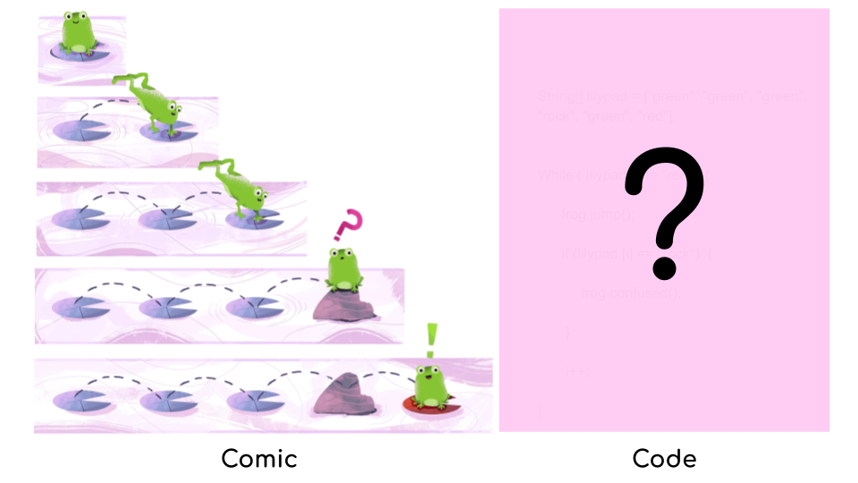

    <!--background color-->
    <script type="text/javascript">
        document.write ('<body style="background: Gainsboro; background-attachment: fixed;">')
    </script>

    <section id="conference" class="black-frame about about-container about-container-top">
      <h1>{{ page.title }}</h1>

      <div class="icon-about">
        
        <h2 class="second">What?</h2>

        <br><br>

        
        <blockquote>
          <i>"Can you write code that illustrates the above comic strip? Or guess at high-level what computing concepts are illustrated in it?"</i>
        </blockquote>
        <br>

        <p>Coding Strip ("Comic Strip on Coding") is a research project conducted by a research team at the University of Waterloo. The project began with this simple question: "how can we leverage a medium of comics to teach computing concepts?"</p>

        <p>The project is motivated by two main observations:

          <ul>
            <li>Comics is a fun, effective form of communication, especially for teaching abstract concepts.</li>
            <li>Comics currently made for computer science education are not designed to map (or fade) to code, making it difficult to use for transferring the learning from comics to code.</li>
          </ul>
         </p>

         <p>Consequently, our project aims to address the following research questions:

           <ul>
            <li>How do we design coding strips to illustrate computing concepts, such as programming constructs, data structures, and algorithms? Concretely,<br><br>
              <ul>
                <li>What are the challenges?</li>
                <li>What should the design process look like?</li>
                <li>What are the design guidelines?</li>
                <li>What artifacts do we need to support this process?</li>
              </ul><br>
              
            <li>How can coding strips be used in classrooms? Concretely,</li><br>
                <ul>
                  <li>What activities/lessons can it support?</li>
                  <li>What problems can it address?</li>
                </ul>
           </ul>
         </p>


        <br><br>
        <h2 class="third">Why?</h2>

          <p>Computing concepts are often introduced with abstract represetation, code. But the syntax complexities in code has been attributed as the source of confusion for students and the biggest reason for their losing interset in programming.
          <br><br>
          Jerome Bruner suggested that to effectively teach abstract ideas/concepts, one should begin with concrete representation, such as physical object, and then gradually progress towards abstract representation, e.g., mathematical language. Since then, the effectiveness of this approach has gained support empirically and theoretically.
          <br><br>
          We focus on designing comics that map to code in order to leverage this technique, known as concreteness fading. We believe that it can be an effective way to teach computing concepts and simultaneously encourage transfer to traditional text-based programming languages. 
          </p>

        <br><br>
        <h2 class="second">How?</h2>

        <p>If you want to learn how you can design comics and/or use coding strips in your classroom, please come to our workshop!</p>

      <br><br><br><br>
      Last updated: {{site.data.template.last_updated}}

      </div>
      
      <!-- <h2 class="first">Objectives</h2>

      <p>Your Objective</p>

    </section>
      <p>Your Objective</p>
    </section>


<!--     <section id="fourth" class="black-frame about about-container">
      <h1>Title</h1>

      <p>More</p>
    </section> -->


<!-- 
    <section id="fifth" class="black-frame about about-container about-container-bottom">
      <h1>About</h1>

      <p>Info</p>
    </section> -->

